Plataforma de Asistencia · Aspel NOI
MANUAL DE USUARIO
Control de asistencia, incidencias, tiempo extra y exportación a nómina
powered by Evorgyn
Mallatex · Plataforma de Asistencia es el sistema con el que Mallatex controla la asistencia de su personal y prepara la información de nómina. Funciona como una capa de control entre el checador facial (Hikvision) y Aspel NOI —el módulo de nómina del ERP de Aspel—, de modo que la información se revisa y valida antes de generar los movimientos de nómina.
Toda la operación sigue seis pasos, visibles también en el Tablero:
| # | Etapa | Descripción |
|---|---|---|
| 1 | Captura facial | El colaborador registra entrada y salida en el checador. |
| 2 | Sincronización | La plataforma descarga las checadas y aplica horarios y reglas. |
| 3 | Revisión | Nómina visualiza asistencias, retardos, faltas y omisiones. |
| 4 | Corrección | Se clasifican vacaciones, permisos, incidencias y ajustes. |
| 5 | Autorización | Se validan las horas extra y se cierra el periodo. |
| 6 | Exportación NOI | Se genera la información compatible para su carga en Aspel NOI. |
| Acción | Nómina | Contador | Admin |
|---|---|---|---|
| Ver tablero, asistencia, reportes | ✓ | ✓ | ✓ |
| Sincronizar checador / reprocesar | ✓ | ✓ | ✓ |
| Corregir asistencia (con motivo) | ✓ | ✓ | ✓ |
| Registrar incidencias | ✓ | ✓ | ✓ |
| Autorizar / rechazar incidencias | — | ✓ | ✓ |
| Autorizar / rechazar horas extra | ✓ | ✓ | ✓ |
| Cerrar periodo | ✓ | ✓ | ✓ |
| Reabrir periodo | — | ✓ | ✓ |
| Empleados, horarios, conceptos NOI | — | ✓ | ✓ |
| Reglas globales y usuarios | — | — | ✓ |
El trabajo se organiza por periodos (por ejemplo, quincenas). Un periodo puede estar Abierto (admite cambios) o Cerrado (bloqueado). El periodo activo se elige en la barra superior y determina lo que se muestra en cada pantalla.
Aspel NOI es el módulo de nómina del ERP de Aspel. La plataforma genera un archivo de interfaz con los movimientos del periodo, mapeados a los conceptos de NOI del cliente, listo para su carga.
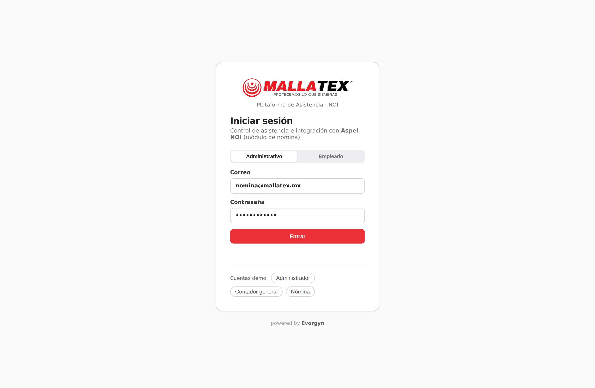
Los botones de Cuentas demo (Administrador, Contador general, Nómina) rellenan las credenciales de prueba automáticamente.
| Rol | Correo | Contraseña |
|---|---|---|
| Administrador | admin@mallatex.mx | mallatex2026 |
| Contador general | contabilidad@mallatex.mx | mallatex2026 |
| Responsable de nómina | nomina@mallatex.mx | mallatex2026 |
Agrupa los módulos en cuatro secciones. Las opciones visibles dependen de su rol.
Los contadores rojos junto a Faltas e incidencias y Horas extra indican cuántos elementos están pendientes de autorizar.
Propósito. Ofrece una vista ejecutiva del periodo: indicadores, distribución de asistencia, estado del checador y pendientes.
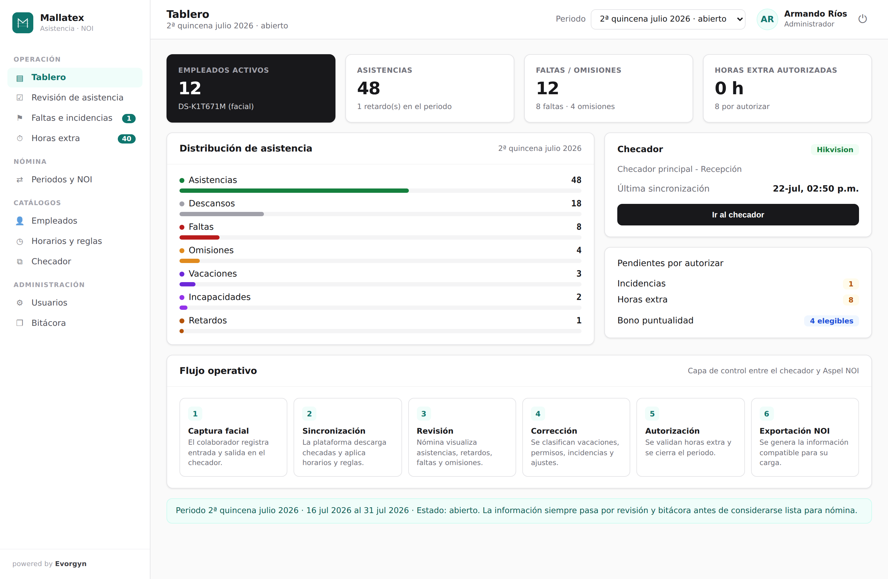
Propósito. Es la pantalla central de trabajo diario: muestra el estatus calculado de cada empleado por día y permite corregirlo.
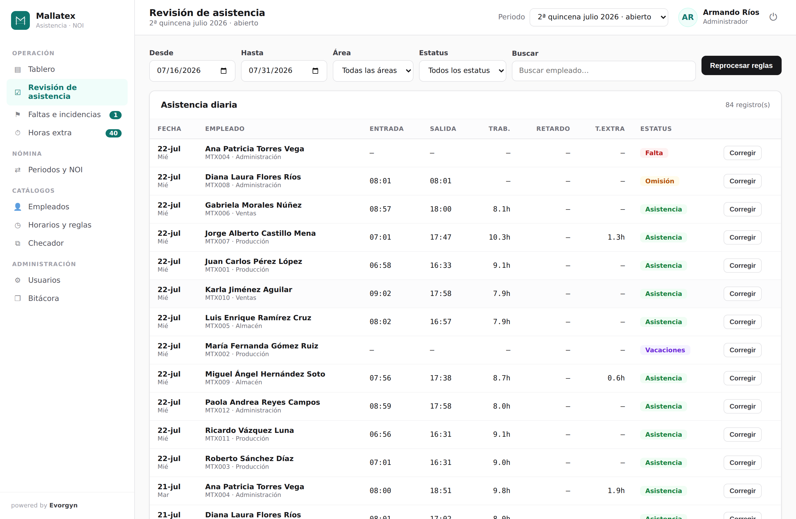
| Estatus | Significado |
|---|---|
| Asistencia | Entrada dentro de la tolerancia del turno. |
| Retardo | Entrada después de la tolerancia y hasta el umbral de retardo. |
| Falta | Sin checadas en día laborable o retardo mayor al umbral. |
| Omisión | Registró una sola checada (falta entrada o salida). |
| Vacaciones / Permiso / Incapacidad | Proviene de una incidencia autorizada. |
| Descanso | Día no laborable según el horario. |
El botón Reprocesar reglas recalcula la asistencia del rango con las reglas y checadas vigentes, respetando las correcciones manuales.
Propósito. Registrar y autorizar vacaciones, permisos, incapacidades, faltas justificadas y días festivos. Una incidencia autorizada tiene prioridad sobre el cálculo automático.
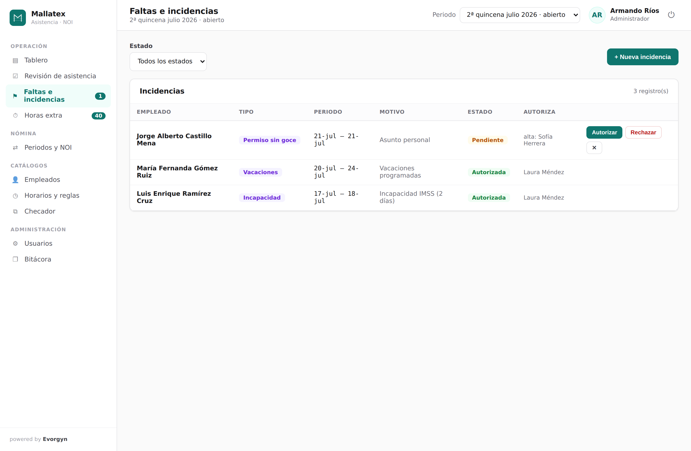
| Tipo | Uso |
|---|---|
| Vacaciones | Días de vacaciones autorizados. |
| Permiso con goce | Ausencia justificada con goce de sueldo. |
| Permiso sin goce | Ausencia sin goce (deducción). |
| Incapacidad | Incapacidad IMSS. |
| Falta justificada | Falta con justificación aceptada. |
| Día festivo / Descanso | Marca el día como festivo o de descanso. |
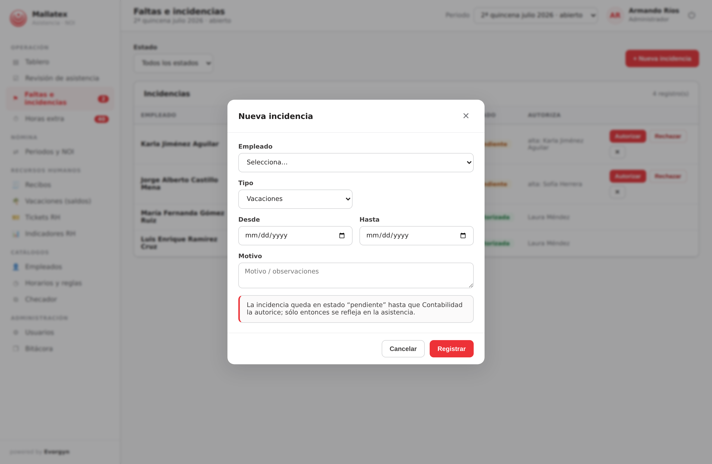
Propósito. Revisar y autorizar el tiempo extra calculado a partir de las checadas. Nada se exporta a NOI sin autorización.
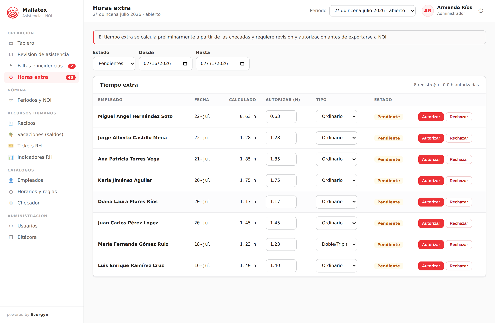
El sistema propone el tiempo extra como los minutos trabajados después de la salida programada (sujeto a un umbral y un bloque mínimo configurables). El trabajo en día de descanso se contabiliza como tiempo extra.
Propósito. Consolidar el periodo, revisar el resumen por empleado, generar los movimientos para Aspel NOI, exportarlos y cerrar el periodo.
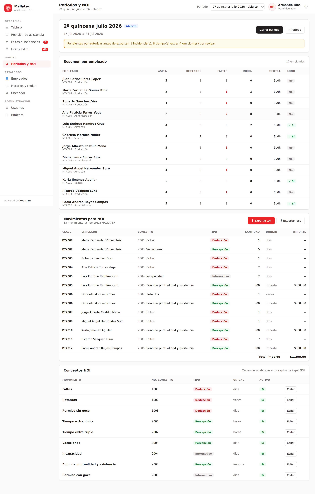
Propósito. Administrar pagos que no dependen del reloj checador sino de una cantidad capturada por periodo: el bono por kilometraje del conductor, la costura extra por metro cuadrado del operador de producción y la comisión sobre ventas del vendedor. Se abre en Nómina → Percepciones variables.
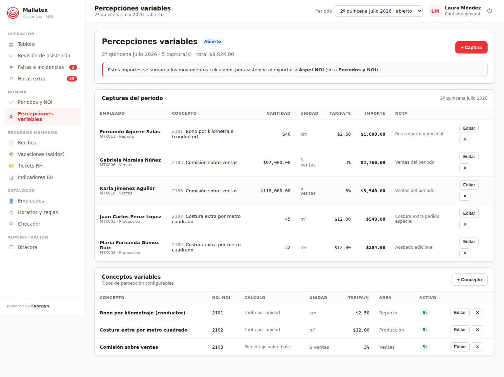
Cada tipo de pago es un concepto configurable con su número de Aspel NOI y su forma de cálculo:
| Forma de cálculo | Cómo se obtiene el importe | Ejemplo |
|---|---|---|
| Tarifa por unidad | cantidad × tarifa | 640 km × $2.50 = $1,600 |
| Porcentaje sobre base | base × (porcentaje ÷ 100) | $92,000 × 3 % = $2,760 |
| Importe directo | se captura el importe ya calculado | — |
Con + Concepto (Contador/Administrador) se crea un concepto indicando nombre, número NOI, forma de cálculo, unidad (km, m², $ ventas…), tarifa/porcentaje y el área sugerida.
Cada concepto declara su fuente de datos. Hoy la captura es manual; en una fase posterior cada fuente externa se sincroniza automáticamente (tal como la descarga del checador Hikvision está simulada hoy y en producción usa ISAPI/SDK). La columna Origen de cada captura indica de dónde provino (Manual, G3, MES o Aspel).
| Fuente | Alimenta | Origen en producción (fase posterior) |
|---|---|---|
| G3 | Kilometraje del conductor | Telemetría de flotilla (G3 Drive) |
| MES | m² de costura en fabricación | Plataforma MES (órdenes de producción) |
| Aspel | Base de comisión de ventas | Aspel (CxC/SAE) al confirmarse el pago de facturas |
Los botones ⟳ G3, ⟳ MES y ⟳ Aspel del encabezado ejecutan la sincronización (hoy en modo simulado). La sincronización hace actualización por identificador externo: re-sincronizar actualiza las capturas de esa fuente sin duplicarlas, y no toca las capturas manuales.
Propósito. Catálogo del personal, con su relación (clave) en Aspel NOI y su identificador en el checador.
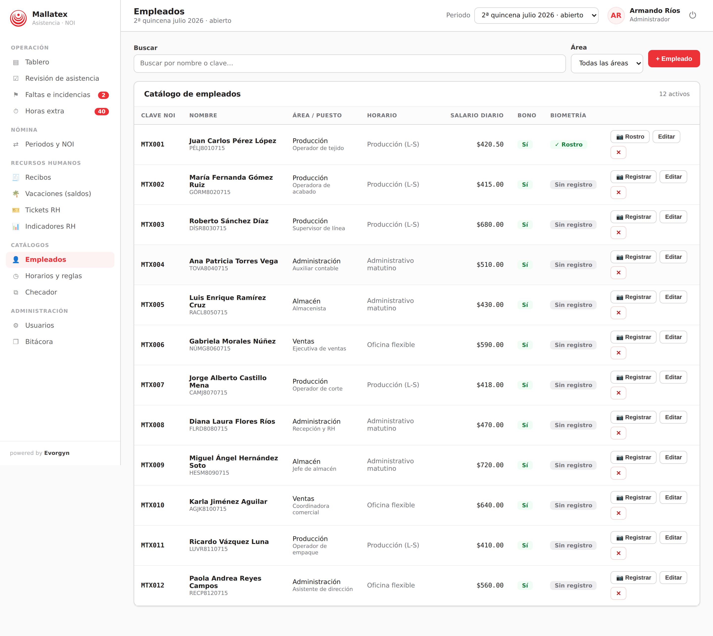
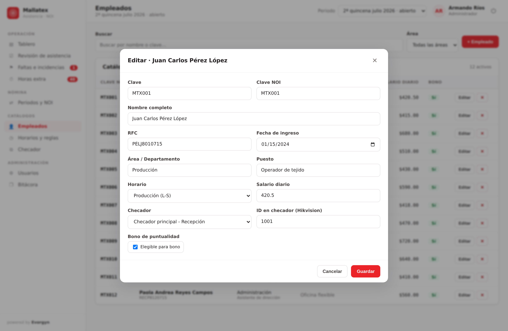
Propósito. Definir los turnos (horarios) y las reglas globales que rigen el cálculo de asistencia.
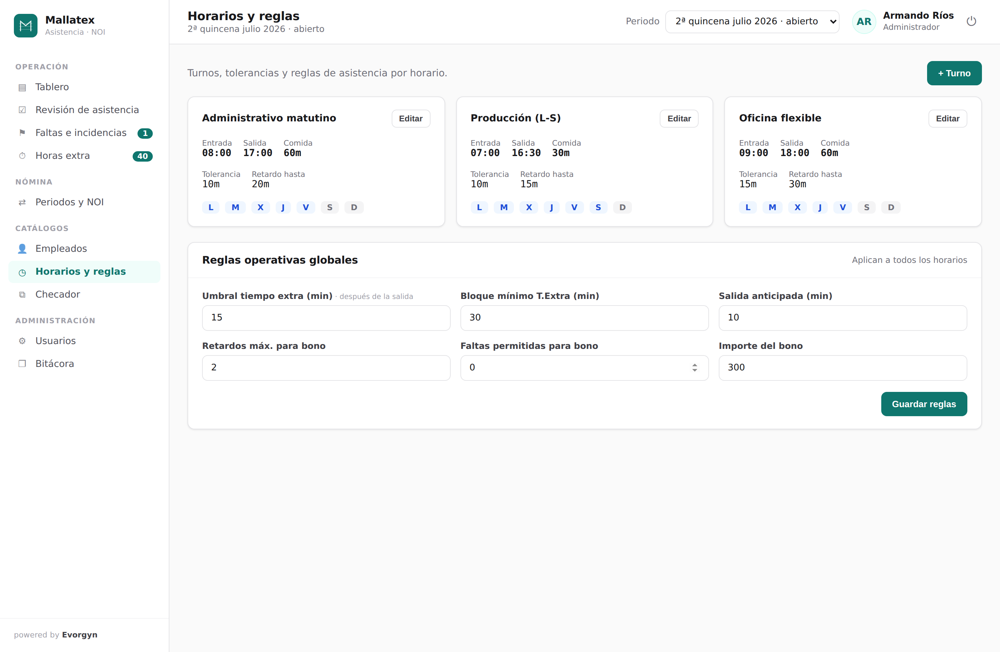
Cada turno define entrada, salida, comida, tolerancia, umbral de retardo, horas por día y días laborables. Use + Turno para crear uno o Editar para ajustarlo.
| Parámetro | Descripción |
|---|---|
| Umbral tiempo extra (min) | Minutos después de la salida para empezar a contar tiempo extra. |
| Bloque mínimo T. Extra (min) | Duración mínima para considerar el tiempo extra. |
| Salida anticipada (min) | Margen para marcar salida anticipada. |
| Retardos máx. para bono | Retardos permitidos en el periodo sin perder el bono. |
| Faltas permitidas para bono | Faltas injustificadas permitidas para conservar el bono. |
| Importe del bono | Monto del bono de puntualidad y asistencia. |
Propósito. Consultar el dispositivo Hikvision, sincronizar las checadas y revisar los registros descargados.
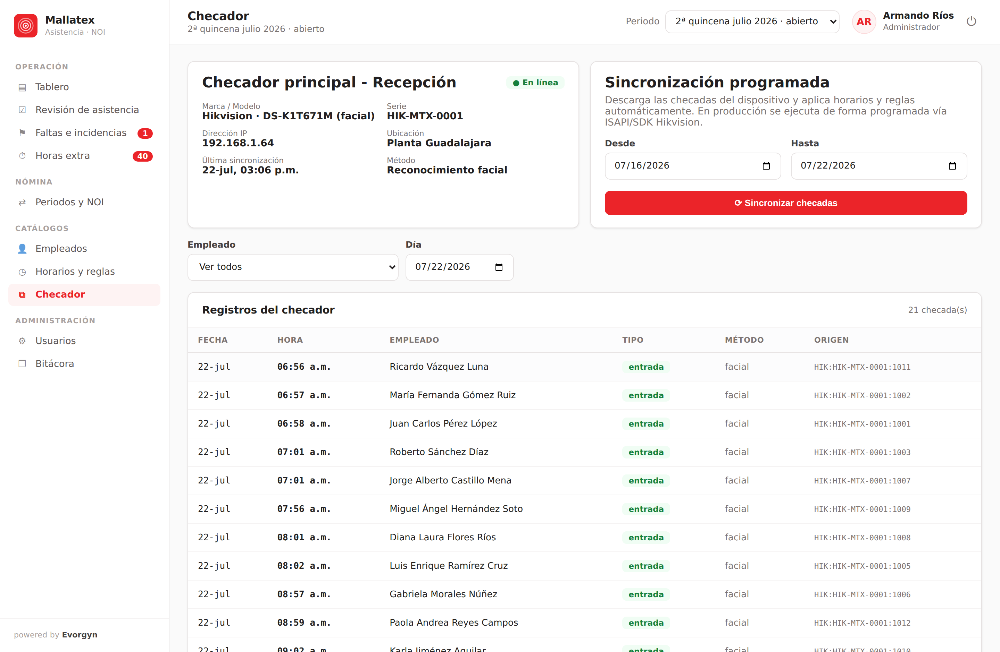
El listado inferior permite filtrar por empleado y por día, mostrando cada checada con su hora, tipo (entrada/salida), método y origen.
Propósito. Es la pantalla que ve el colaborador al registrar su entrada/salida por reconocimiento facial con la cámara frontal de una tablet o una webcam. El reconocimiento se ejecuta en el navegador, de forma local y sin servicios externos.
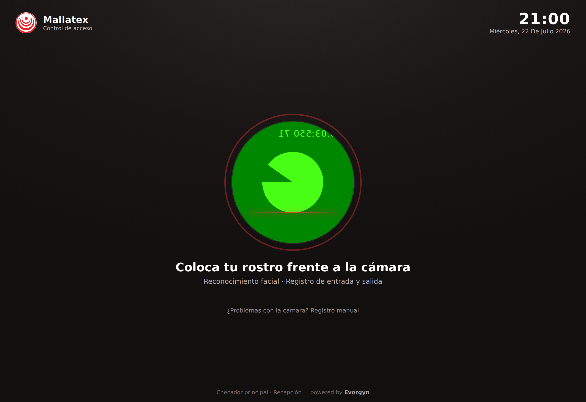
Antes de usar el kiosco, cada colaborador debe registrar su rostro. En Empleados, la columna Biometría indica el estado (✓ Rostro / Sin registro).
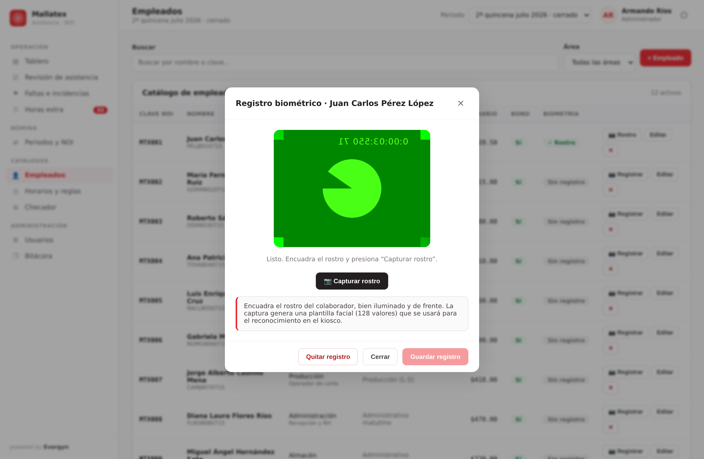
Abra el kiosco desde Checador → Abrir modo kiosco o en la dirección /kiosk (idealmente en la tablet de recepción).
Propósito. Administrar los usuarios de la plataforma (sólo Administrador).
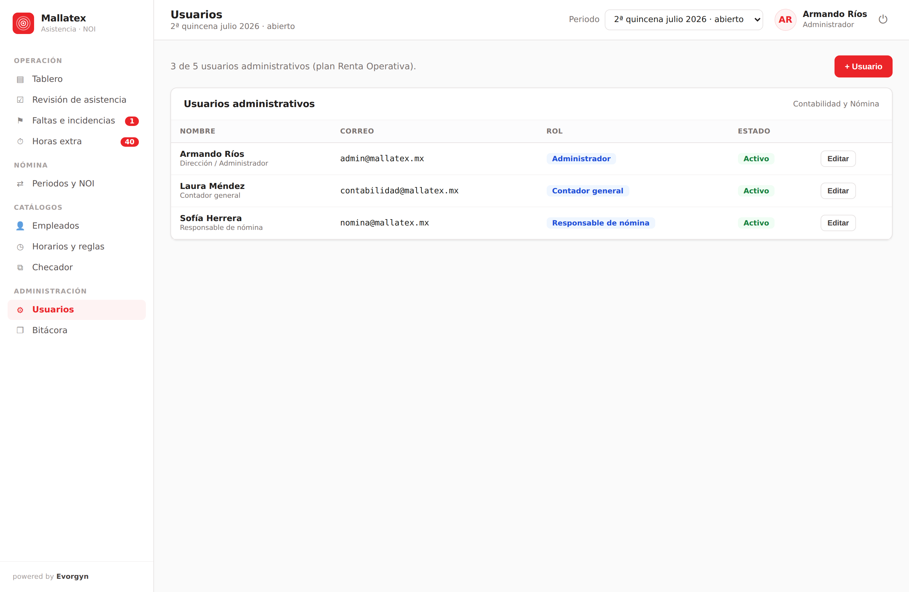
Propósito. Trazabilidad de todas las operaciones: quién hizo qué, cuándo y con qué detalle/motivo.
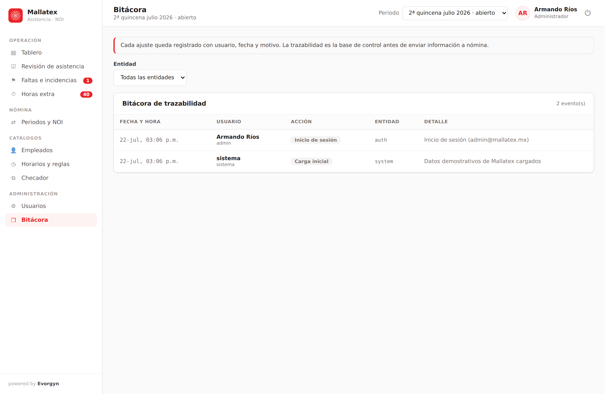
Puede filtrarse por entidad (asistencia, incidencias, horas extra, periodo, empleado, etc.). Registra altas, correcciones, autorizaciones, rechazos, sincronizaciones, cierres y exportaciones.
Propósito. Módulos administrativos de RH: indicadores, recibos preliminares, saldos de vacaciones y tickets. Disponibles en el grupo Recursos Humanos de la barra lateral.
Tablero con % de asistencia, puntualidad y ausentismo, tiempo extra, empleados elegibles a bono, asistencia por área y top de retardos, además de los pendientes por autorizar.
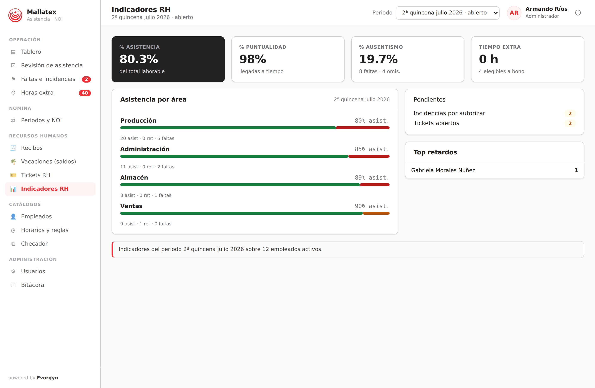
Genera recibos preliminares del periodo a partir de la asistencia, incidencias, tiempo extra y bono (percepciones, deducciones y neto). Cada recibo puede consultarse y descargarse.
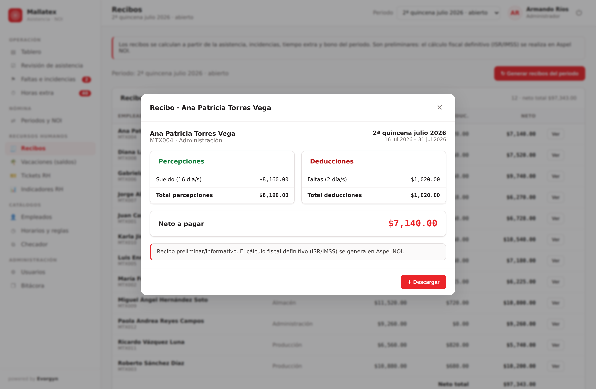
Muestra, para toda la plantilla, la antigüedad y los días de vacaciones (derecho, tomados y disponibles) calculados conforme a la Ley Federal del Trabajo (reforma 2023).
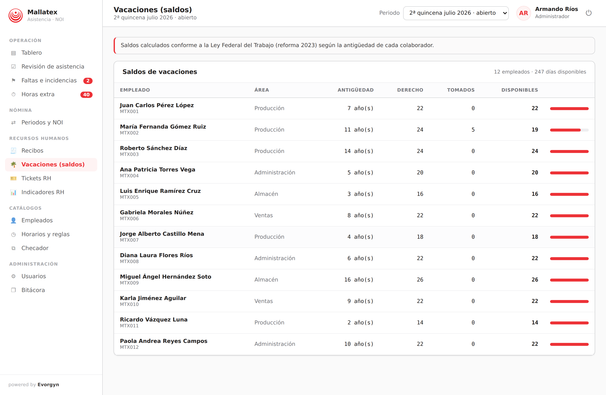
Bandeja de solicitudes de los colaboradores. RH responde, da seguimiento y cambia el estado (abierto, en proceso, resuelto).
Propósito. Espacio de autoservicio para el colaborador. Se accede desde la pantalla de inicio eligiendo Empleado e ingresando su código y PIN.
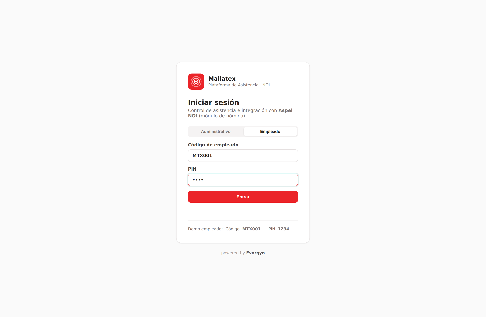
El colaborador consulta su asistencia del periodo: indicadores (asistencias, faltas, incidencias, tiempo extra) y el detalle diario. No tiene acceso a información administrativa ni de otros empleados.
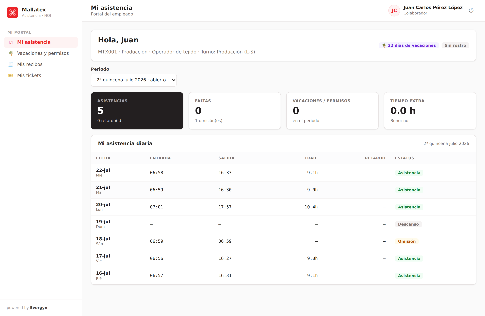
Muestra el saldo de vacaciones y permite solicitar vacaciones o permisos. La solicitud queda pendiente hasta que RH/Contabilidad la autorice (aparece en el módulo de incidencias).
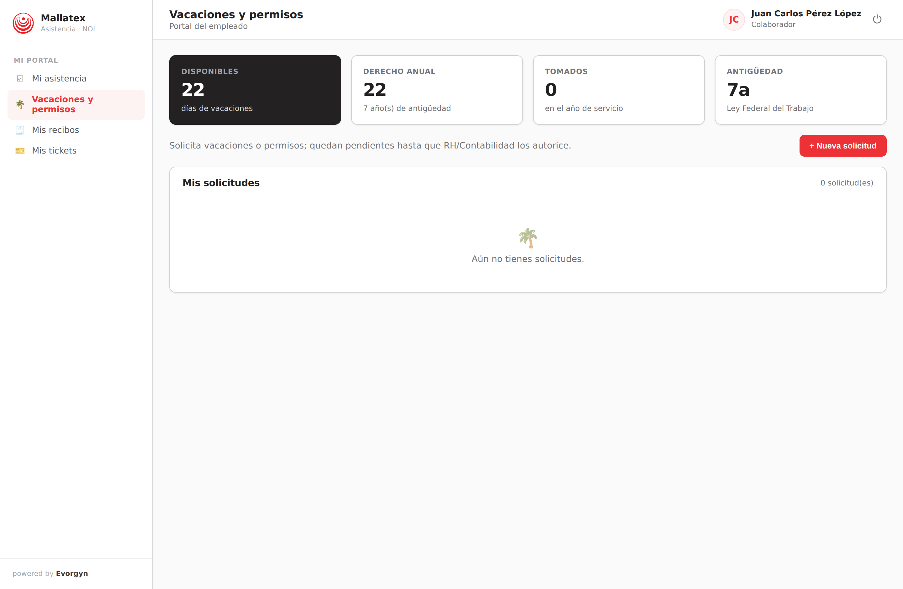
Lista los recibos emitidos; el colaborador puede ver el detalle y descargarlos.
Permite abrir tickets a Recursos Humanos y dar seguimiento a las respuestas.
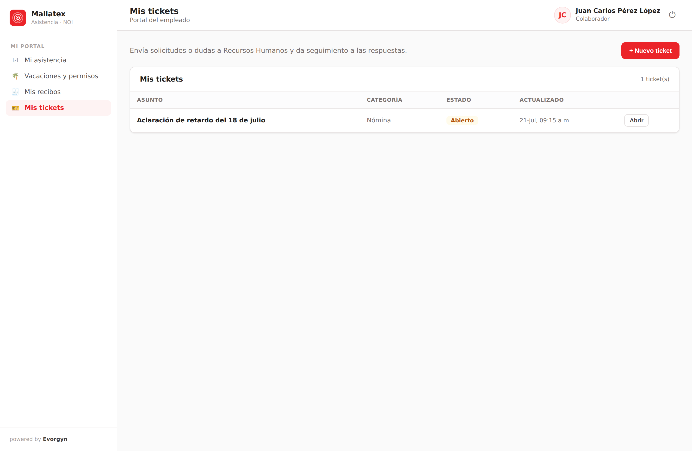
Para cada empleado y día, el sistema determina el estatus así:
Bono de puntualidad. Un empleado conserva el bono del periodo si no excede los retardos permitidos, no tiene faltas injustificadas ni omisiones.
La plataforma es responsiva. En pantallas pequeñas la barra lateral se oculta y se abre con el botón de menú (☰); los indicadores y tablas se reorganizan en una sola columna.
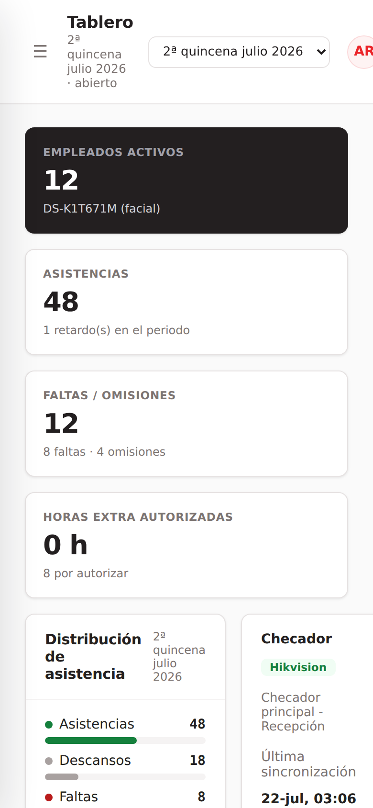
| Situación | Solución |
|---|---|
| No veo las checadas de un empleado | Verifique que el empleado tenga checador e ID asignados y sincronice el rango de fechas correcto en la pantalla Checador. |
| Un día aparece como Falta pero el empleado asistió | Revise si registró ambas checadas; si sólo hay una será Omisión. Corrija el registro con un motivo, o registre la incidencia correspondiente. |
| No puedo autorizar una incidencia | La autorización de incidencias corresponde al Contador general o al Administrador. |
| No me deja exportar a NOI | Existen incidencias u horas extra pendientes de autorizar. Autorícelas o fuerce la exportación al confirmar. |
| No puedo corregir un día | Probablemente el periodo está cerrado. Un Contador/Administrador puede reabrirlo. |
| ¿Puedo agregar más usuarios? | Sí, hasta 5 usuarios administrativos activos en el plan Renta Operativa. |
| Término | Definición |
|---|---|
| Checada | Registro de entrada o salida capturado por el checador. |
| Tolerancia | Minutos de gracia tras la hora de entrada antes de contar retardo. |
| Omisión | Día con una sola checada (falta entrada o salida). |
| Incidencia | Evento que justifica o modifica la asistencia (vacaciones, permiso, incapacidad…). |
| Periodo | Intervalo de nómina (por ejemplo, una quincena). |
| Movimiento NOI | Concepto consolidado (percepción/deducción) que se exporta a Aspel NOI. |
| Bitácora | Registro de auditoría de todas las operaciones. |
La plataforma es una aplicación web (Node.js + Express) con una interfaz servida por el propio servidor. No requiere instalación en el equipo del usuario final, sólo un navegador moderno.
Pruebas: la aplicación incluye 27 pruebas automatizadas (unitarias y de integración) que se ejecutan con npm test.